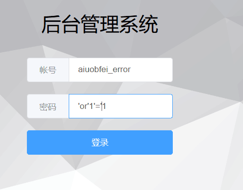
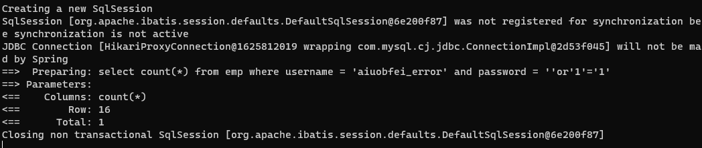
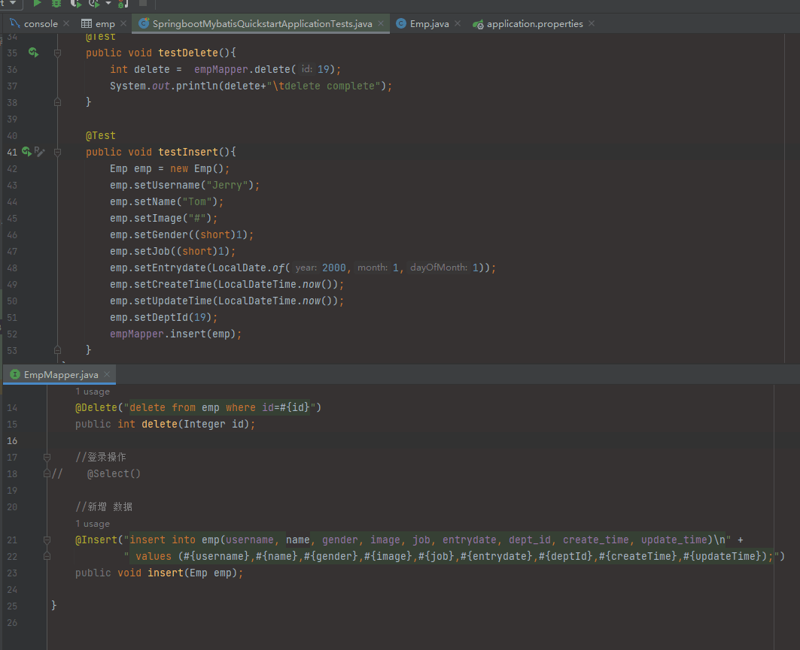
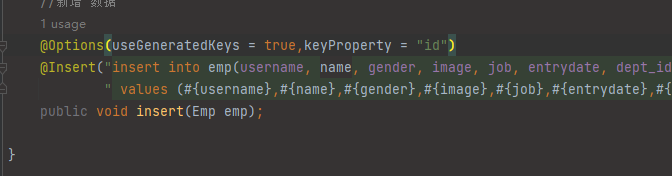
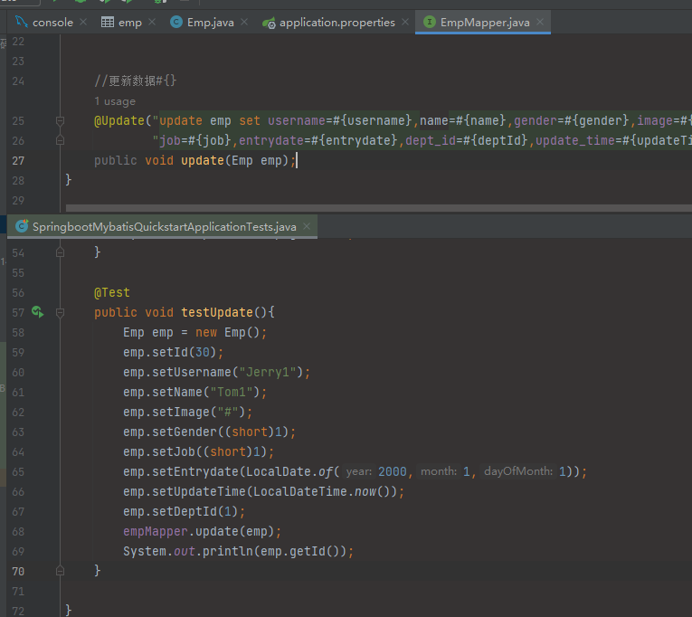
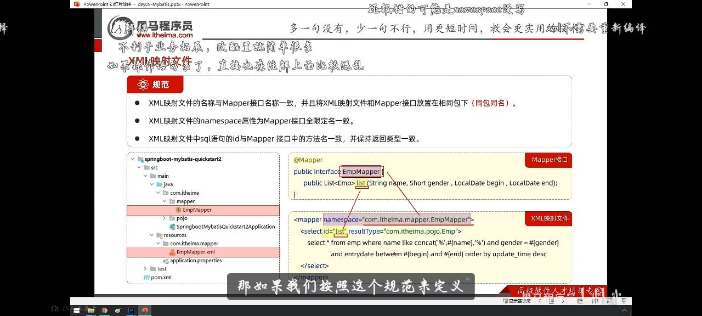

Mybatis 1.MyBatis的操作 1.1防SQL注入 由于在使用${}插入数据时是做字符拼接，会有注入风险性


此处有可能会造成误判，需使用#{}注入，可以防止此类情况发送
代码如下
1.2mybatis的插入数据操作 1 2 3 4 @Options(useGeneratedKeys = true,keyProperty = "id") @Insert("insert into emp(username, name, gender, image, job, entrydate, dept_id, create_time, update_time)\n" + " values (#{username},#{name},#{gender},#{image},#{job},#{entrydate},#{deptId},#{createTime},#{updateTime});") public void insert (Emp emp) ;

有关新增返回值,插入代码
1 @Options(useGeneratedKeys = true,keyProperty = "id")

1.3删除操作 首先在mapper接口里面写入代码
1 2 3 @Delete("delete from emp where id=#{id}") public int delete (Integer id) ;
其中int返回值为所操作的记录数量，下面改为void
再在测试代码内写入下面代码测试
1 2 3 4 5 6 7 8 @Autowired private EmpMapper empMapper; @Test public void testDelete () { int delete = empMapper.delete(19 ); System.out.println(delete+"\tdelete complete" ); }
1.4更新操作 sql语句
1 2 #更新操作 update emp set username='',name='',gender='',image='',job='',entrydate='',dept_id='',update_time='' where id = 1;
在mapper上书写
1 2 3 4 @Update("update emp set username=#{username},name=#{name},gender=#{gender},image=#{image}," + "job=#{job},entrydate=#{entrydate},dept_id=#{deptId},update_time=#{updateTime} where id = #{id};") public void update (Emp emp) ;
在test中测试
1 2 3 4 5 6 7 8 9 10 11 12 13 14 15 @Test public void testUpdate () { Emp emp = new Emp (); emp.setId(30 ); emp.setUsername("Jerry1" ); emp.setName("Tom1" ); emp.setImage("#" ); emp.setGender((short )1 ); emp.setJob((short )1 ); emp.setEntrydate(LocalDate.of(2000 ,1 ,1 )); emp.setUpdateTime(LocalDateTime.now()); emp.setDeptId(1 ); empMapper.update(emp); System.out.println(emp.getId()); }
如图

1.5查询 根据id查询单条记录 1 2 3 @Select("select * from emp where id =#{id}") public Emp getById (Integer id) ;
1 2 3 4 5 @Test public void testGetById () { Emp emp = empMapper.getById(15 ); System.out.println(emp); }
1 2 3 4 5 6 7 8 9 10 11 Creating a new SqlSession SqlSession [org.apache.ibatis.session.defaults.DefaultSqlSession@118acf70] was not registered for synchronization because synchronization is not active JDBC Connection [com.mysql.cj.jdbc.ConnectionImpl@7a388990] will not be managed by Spring ==> Preparing: select * from emp where id = ? ==> Parameters: 15 (Integer) <== Columns: id, username, password, name, gender, image, job, entrydate, dept_id, create_time, update_time <== Row: 15 , yulianzhou, 123456 , 俞莲舟, 1 , 15. jpg, 2 , 2011 -05 -01 , 2 , 2024 -09-12 14 :50 :06 , 2024 -09-12 14 :50 :06 <== Total: 1 Closing non transactional SqlSession [org.apache.ibatis.session.defaults.DefaultSqlSession@118acf70] Emp(id=15 , username=yulianzhou, password=123456 , name=俞莲舟, gender=1 , image=15. jpg, job=2 , entrydate=2011 -05 -01 , deptId=null , createTime=null , updateTime=null )
存在的有些数据为null值，需要用到数据封装
可以使用mybatis的驼峰命名自动映射开关（a_column->aColumn）最为推荐，此方法MySQL中为下划线命名，java内为小驼峰命名
1 2 mybatis.configuration.map-underscore-to-camel-case =true
可以给字段起别名，与JavaBean内属性名一致
1 2 3 @Select("select id,username, password, name, gender, image, job, entrydate, " + "dept_id deptId,create_time createTime,update_time updateTime from emp where id=#{id}") public Emp getById (Integer id) ;
也可以通过@Results和@Result注解，注册手动映射封装
1 2 3 4 5 6 7 @Results({ @Result(column = "dept_id",property = "deptId"), @Result(column = "create_time", property = "createTime"), @Result(column = "update_time", property= "updateTime") }) @Select("select * from emp where id=#{id}") public Emp getById3 (Integer id) ;
条件查询 1 2 3 //条件查询，引号内不允许出现#和大括号，改为$和大括号 @Select("select * from emp where name='%${张}%' and gender= #{gender} and entrydate between '#{begin}' and '#{end}' order by update_time desc ") public List<Emp> list();
此处有两个不熟练而导致的error，首先‘张’应该替换为‘name’，而后的#{end}和#{begin}应该在引号内，改好后配置test处代码就可以测试了
1 2 3 4 5 6 @Test public void testList () { List<Emp> list = empMapper.list("张" , (short ) 1 , LocalDate.of(2000 , 1 , 1 ), LocalDate.of(2110 , 1 , 1 )); System.out.println(list); }
此时虽然解决了，但是还会存在${}的SQL注入问题，性能低，不安全
可以使用concat方法拼接字符串
1 name like concat ('%' ,#{name},'%' )
在早期的springboot1中，不是属性名映射对应，而是使用@Param注解来指定相应参数，在方法的参数列表中使用
1 public List<Emp> list (@Param("name") String name) ;
而如今的springBoot有一个内置的编译插件可以相对应起来；
1.6与XML文件映射 映射规则：XML文件映射名与Mapper接口保持一致，在Mapper所在包下
该文件的namespace属性为Mapper接口全限定名一致
该文件的SQL语句与接口中方法名一致，且返回值类型一致
下面为官网资料-探究已映射的 SQL 语句
1 2 3 4 5 6 7 8 9 10 <?xml version="1.0" encoding="UTF-8" ?> <!DOCTYPE mapper PUBLIC "-//mybatis.org//DTD Mapper 3.0//EN" "http://mybatis.org/dtd/mybatis-3-mapper.dtd" > <mapper namespace ="com.itheima.mapper.EmpMapper" > <select id ="list" resultType ="com.itheima.pojo.Emp" > select * from emp where id = #{id} </select > </mapper >
好处：SQL语句与代码分离，更改xml文件不需要重启项目，更适合大型项目和复杂SQL语句；

1.7